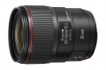

器材库 > 35mm画幅AF定焦镜头 > EF 35/1.4L II USM

详细规格
镜头类型
广角镜头
发布日期
2015-08-27
焦距
35mm
等效35mm画幅焦距
约56mm
最大光圈
F1.4
最小光圈
F22
镜头结构
14片/11组
非球面镜片
2片
光圈叶片
9片
最近对焦距离
28cm
最大放大倍率
0.21倍
驱动马达
USM（超声波马达）
滤镜口径
72mm
镜头卡口
Canon EF
防抖
否
颜色
黑色
尺寸
约Φ80.4×105.5mm
重量
约760g
thambar2016-01-01 15:024.92 分
操作性 5.00耐用性 5.00性价比 4.50解像力 5.00色彩还原 5.00机械结构 5.00
小白和公主2015-11-05 22:004.67 分
操作性 5.00耐用性 5.00性价比 4.00解像力 4.00色彩还原 5.00机械结构 5.00
picture96862015-10-09 19:233.83 分
操作性 2.50耐用性 4.50性价比 2.50解像力 5.00色彩还原 5.00机械结构 3.50
摄影之前世今生2015-09-18 19:434.83 分
操作性 5.00耐用性 5.00性价比 4.00解像力 5.00色彩还原 5.00机械结构 5.00
产品图 / 样片
评测 / 相关文章
- 详细内容 （存档）
- 新科人文镜皇 佳能EF 35/1.4L II USM评测 （存档）
- ［试用］佳能EF 35mm f/1.4L II USM实拍样片 （存档）
- ［试用］第一手体验 开箱佳能EF 35mm f/1.4L II （存档）
- ［资讯］佳能新镜EF 35/1.4L II USM官方样片欣赏 （存档）
相关文章
- ［试用］新科人文镜皇 佳能EF 35/1.4L II USM评测 （存档）
- ［试用］佳能EF 35mm f/1.4L II USM实拍样片 （存档）
- ［试用］第一手体验 开箱佳能EF 35mm f/1.4L II （存档）
- ［资讯］佳能新镜EF 35/1.4L II USM官方样片欣赏 （存档）
- ［资讯］佳能正式发布EF 35mm f/1.4L II USM （存档）
- ［试用］小美女的大头贴 佳能35/1.4+环闪拍人像 （原站已下线）
- ［试用］叛变从35/1.4II和85/1.4IS开始 （原站已下线）
- ［试用］针尖对麦芒 佳能35LII VS 尼康35G （原站已下线）
- ［试用］从革新到革命 从35L II镜头看BR镜片的作用 （原站已下线）
- ［资讯］DP公布佳能35/1.4L II USM评测结论 （原站已下线）
- ［试用］一个低烧器材爱好者的10年历程 （存档）
- ［资讯］EISA公布2016-2017年度器材奖项 （存档）
- ［资讯］EOS大咖秀：中性灰聊佳能牛镜 （原站已下线）
- ［试用］强强组合 A7RII与EF35/1.4LII联姻 （原站已下线）
- ［试用］人文大公主 佳能35/1.4让你拍到爽 （原站已下线）